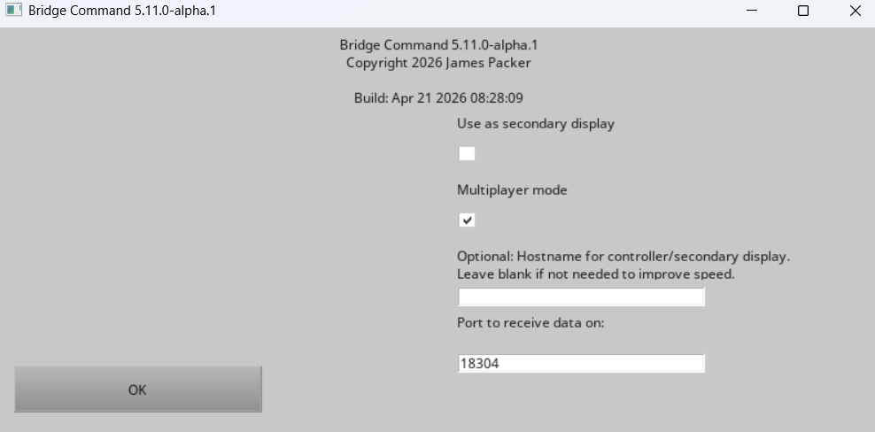
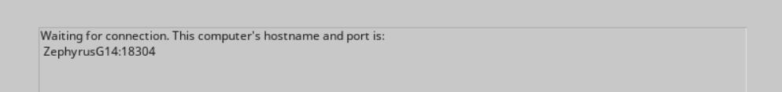

Return to Documentation Home or Bridge Command homepage.
Bridge Command can be used in a multiplayer mode, where multiple users can control vessels in the same scenario, and interact. This mode is intended for users on a single network (wired or wireless), but could be used over the internet.
You will need to run one 'Multiplayer hub' for each session. This can run on a dedicated computer, or on the same computer as one of the Bridge Command sessions.
Important: The Bridge Command sessions for all users must be started first. Each user should start Bridge Command on their computer, and instead of selecting a scenario, the 'Multiplayer' checkbox should be selected.

The Hostname input can normally be left blank. This is only needed if you are using secondary displays for a single ship in the multiplayer session.
Then click OK, and you should see a screen like this:

This screen shows the hostname and port for data. By default, the port is 18304. When all users have started Bridge Command, and are on the 'waiting' screen, then you can start the mulitplayer hub, and select a multiplayer scenario. In the hostnames list, type in the hostnames or IP addresses of the users' computers, separated by commas. The order you type these in will match the user to the ship in the scenario. The hostnames are shown in the 'waiting' screen in the Bridge Command session. If you are using a non-standard port (the standard port is 18304), you can enter the hostname and port in the format hostname:portNumber.

When the scenario is running, each user should see their own Bridge Command session, and the multiplayer hub will start. If required, the simulation can be paused for all users.
If you want to make a new multiplayer scenario, you can use the scenario editor to do this, selecting the 'Multiplayer' option and reading the instructions.
The main points are that the 'own ship' entry in the simulation is ignored, and that the 'other ships' become the controlled vessels in the multiplayer scenario. The initial speed and heading of these ships is set by creating an initial 'leg' with the required speed and heading. If the scenario has more vessels than multiplayer users, the additional vessels will not appear in the scenario.
The multiplayer scenario name must end with '_mp'.
Bridge Command and the multiplayer server use the UDP protocol, and by default uses ports and 18304. For more information on the networking protocol, see the networking protocol information.